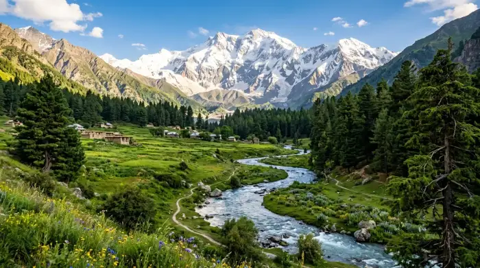

Guardian of the Hindu Kush Peaks
“A premier digital gateway for ecological conservation, indigenous traditional wisdom, and biodiversity research across Pakistan's high alpine zones.”

4,500+ Species
Indigenous high vegetation450+ Species
Vertebrates & bird species15 High Sanctuary Parks
With active communities180+ Local Remedies
Herbal formulation logs65+ Academic Studies
Local scientific papers120+ High Sighting Reports
By school science squadsInteractive Hindu Kush Ecological Map
Select an alpine district of Pakistan to explore localized habitats, protected reservation parks, altitude levels, custom species counts, and climate zone diagnostics.
Adjust your scientific search filter or switch tabs between plants and wildlife.
Ethnobotany & Traditional Ecological Knowledge
For centuries, local communities of Swat, Upper Dir, Lower Dir, and Chitral have maintained a profound harmony with nature. Explore traditional herbal remedies, sustainable mountain foraging practices, and conservation wisdom passed down through elders.
💚 Documented Medicinal Plant Remedies
⚖️ Indigenous Sustainable Harvesting Protocols
Indigenous communities have historically followed strict tribal agreements called “Asar” or local custom protocols that safeguard botanical ecosystems from overexploitation, especially in Swat, Kalam, and Lower Dir.
🎤 Elder Oral Wisdom & Narrative Transcripts
Himalayan Conservation Challenge
Test your understanding of high-altitude ecosystems, endangered species, ethnobotany remedies, and sustainability strategies. Perfect for schools and universities!
National Parks & Wildlife Refuges
These protected high valleys serve as sanctuaries for fragile mountain life, safeguarding endemic floral and faunal gene pools under Strict Conservation Protocols.
Research Download Center & Syllabi
Download our physical scientific handbooks prepared by naturelink coordinators to help high-altitude foragers and university scholars.
Global Strategic Partners & Repositories
Connect with leading global conservances, UN environmental initiatives, and Pakistani scientific boards directly to study larger biodiversity metadata matrices.
Volunteer Citizen Portal
Spotted a rare animal species (like a Himalayan Monal, Kashmir Markhor, or Snow Leopard) or an endangered plant? Report your location coordinates to help environmental researchers.
Live Verified Sightings Log
● Local Ledger SyncAI Himalayan Eco-Guide
Ask our naturelink AI companion about Hindu Kush ecosystems, ethnobotany remedies, or sustainable forestry practices...